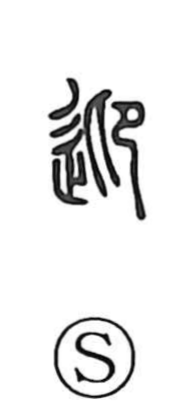

迎

Uncategorized
Kun: mukaeru, mukae | On: gei
to welcome ・ to meet ・ to greet
Explanation
迎 is a phono‑semantic compound. The phonetic is 卬, a figure of two sides facing one another; when seen from below this facing form yields 仰 “to look up,” and when seen from above it becomes 抑 “to press down.” With 辵, the sign of going along a road, added, the sense focuses on going out to meet—welcoming someone who approaches from the opposite side. A related formation is 逆, which shows a person viewed from the opposing side and, with 辵, likewise evokes confronting someone coming toward you, though in usage it developed the meaning of going against or the direct opposite.